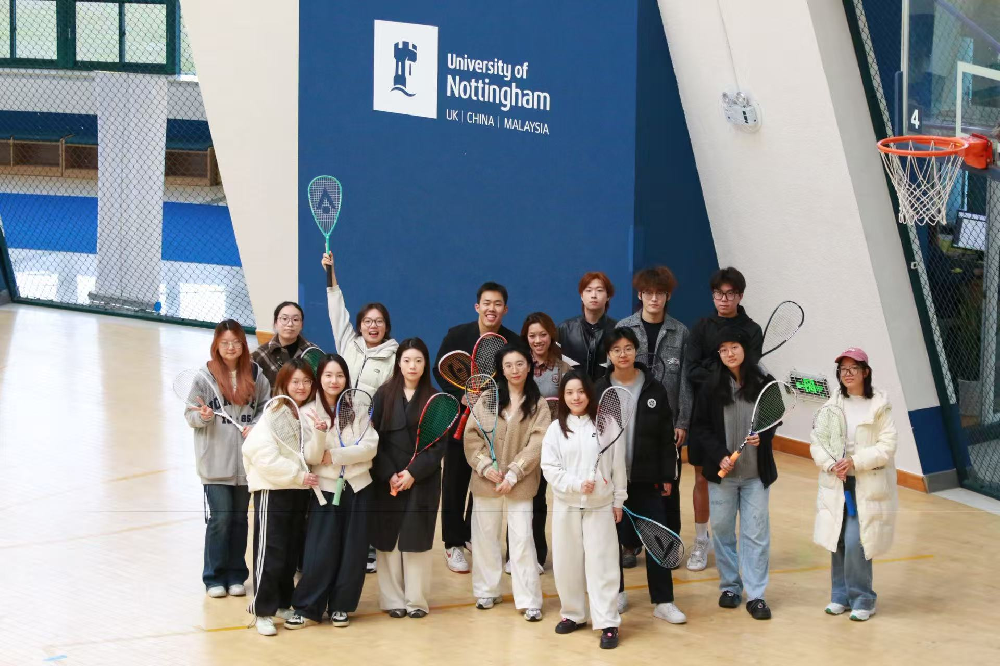
Squash Court
Energy anchor
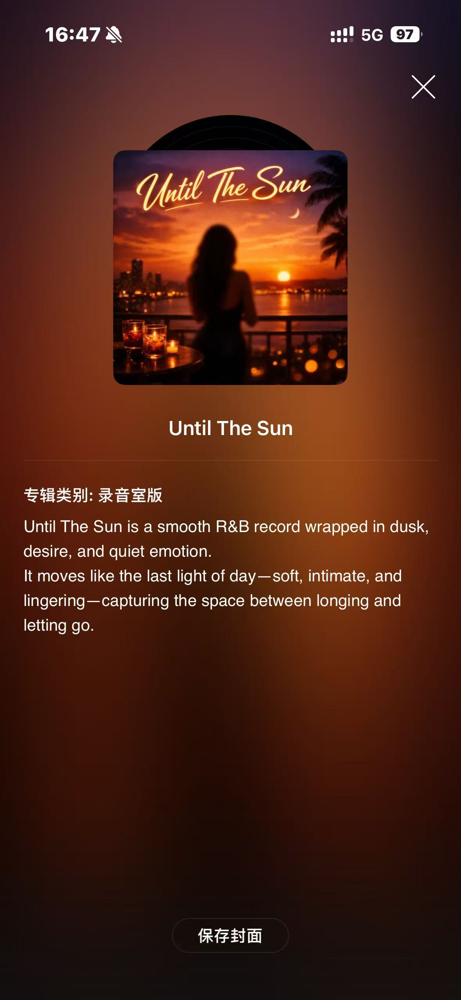
Until The Sun
2024 Slush
Team Lead
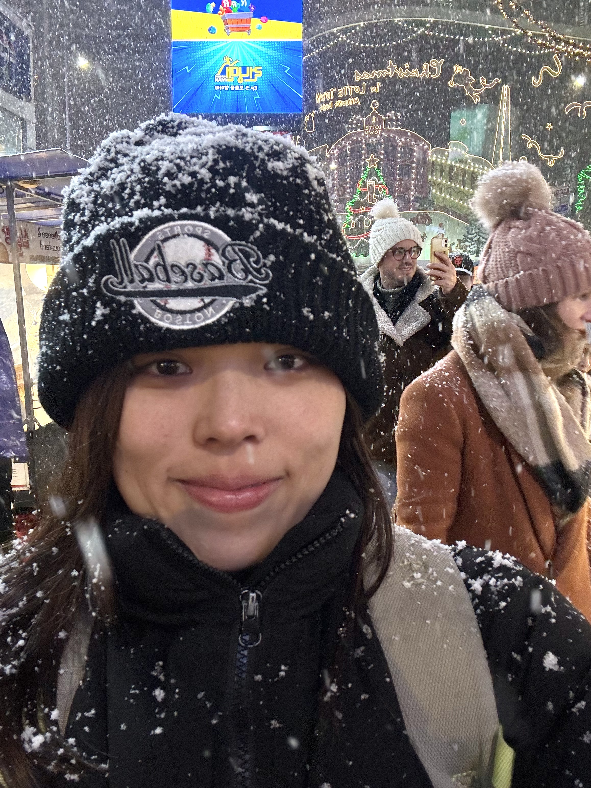
Snow Day
Bright moments
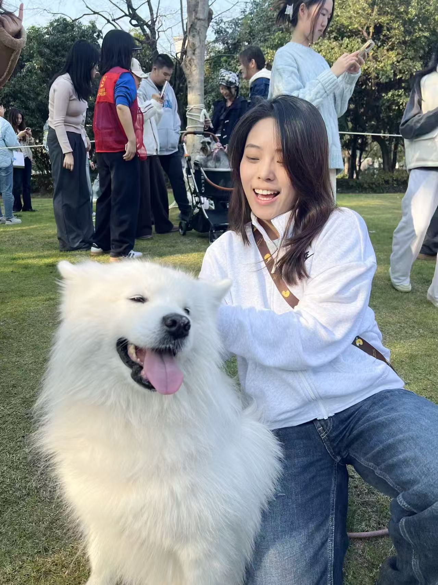
Daily Life
Soft energy
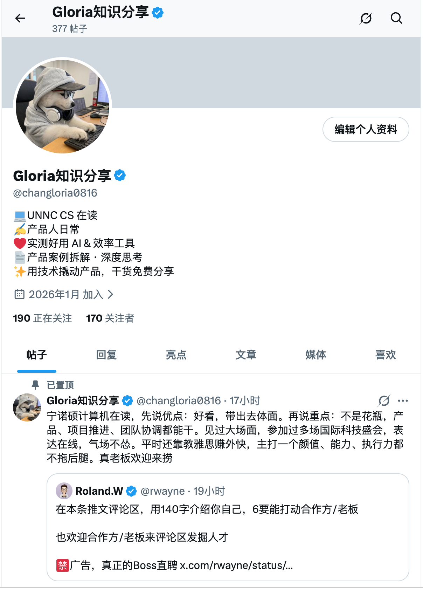
AI Lens
170 followers
.jpeg)
2024 MWC
Huawei booth

2024 Robotex
Interpreter

2023 Slush
Guest 1v1
This is not a standard resume. It is a shop of lived experiences: every object opens a part of me.
01
Squash Court
很难找到一个真正坚持下来的运动。壁球对我来说是高强度的释放，也是我认识不同朋友、维持身体能量的方式。
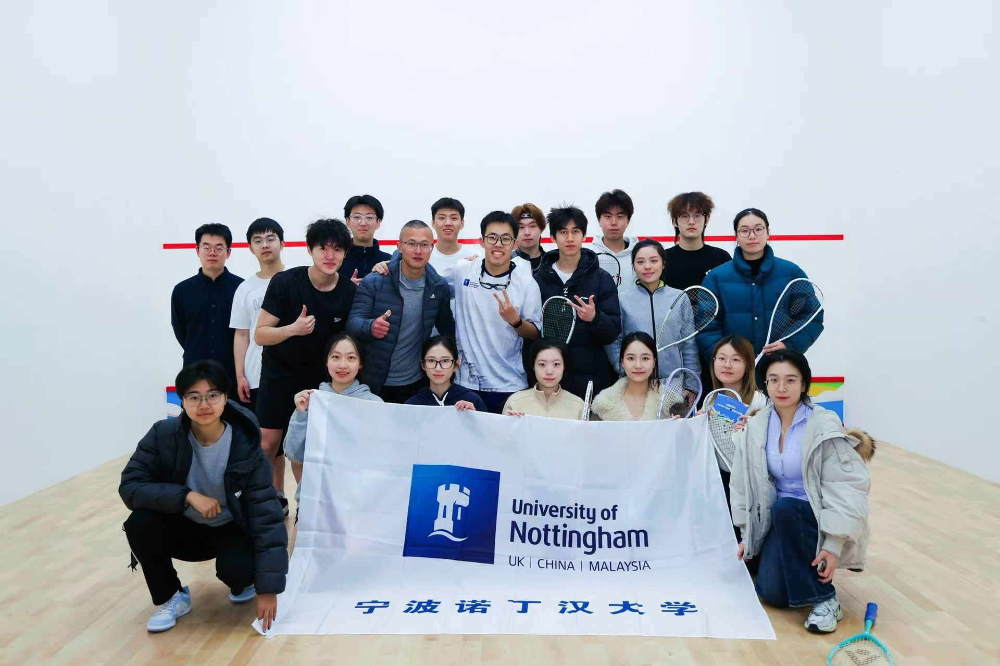
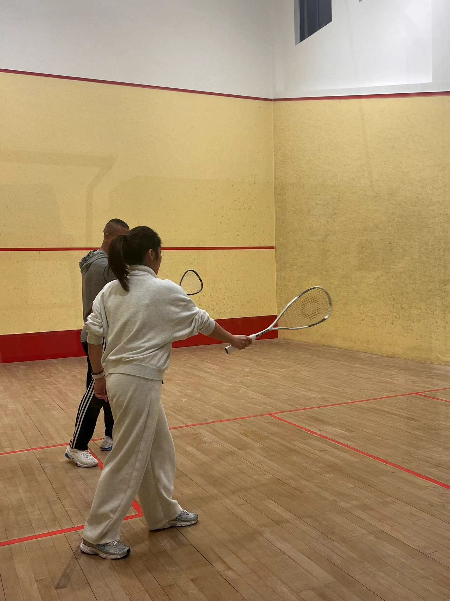
02
Until The Sun
我的世界不能没有音乐。我喜欢 R&B 和 Jazz，从方大同、John Mayer、Stevie Wonder 那里获得过很多影响。现在我用 Suno 做音乐，并把作品上架到网易云音乐。
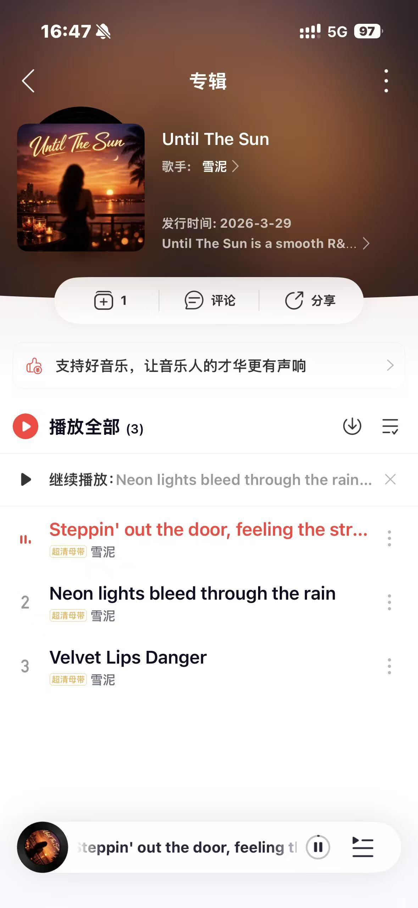
Until The Sun
A smooth R&B record wrapped in dusk, desire, and quiet emotion.
- Steppin' out the door, feeling the street
- Neon lights bleed through the rain
- Velvet Lips Danger
03
Freedom Pass
自由不是散漫，而是创作系统的氧气。我需要一定的空间去探索、试错、吸收灵感，否则精神和身体都会变得迟钝。
“你必须给我一定的自由，不能限制我，否则我会没有灵感。”

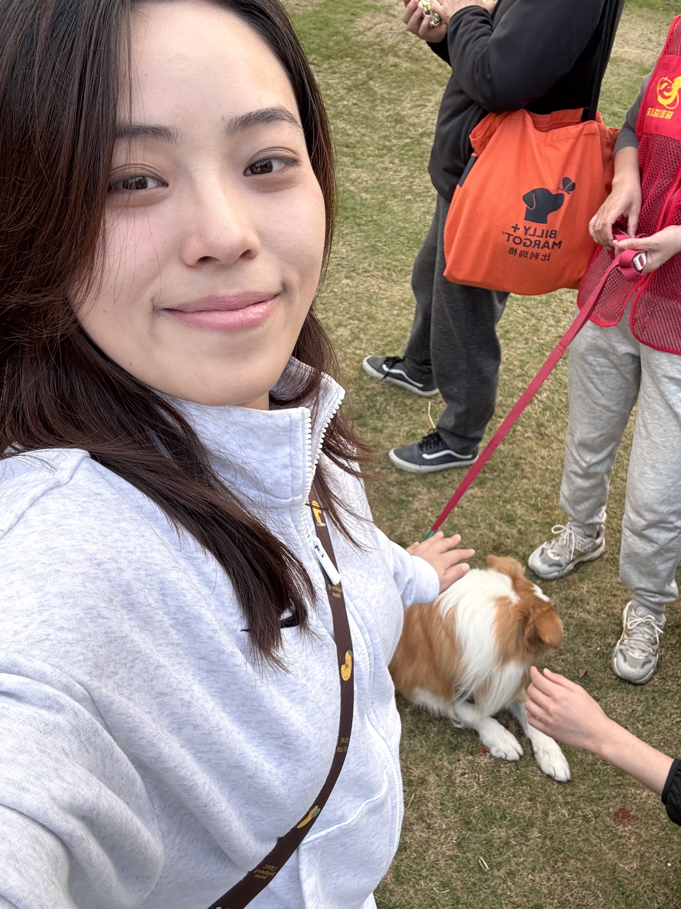
04
Side Quest Kit
我会尝试不同的副业和角色：做过好评很多的雅思老师，也做过国际平台运营。每一次尝试都让我更懂人、内容和增长。
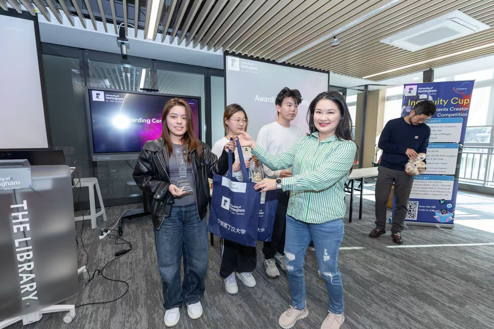
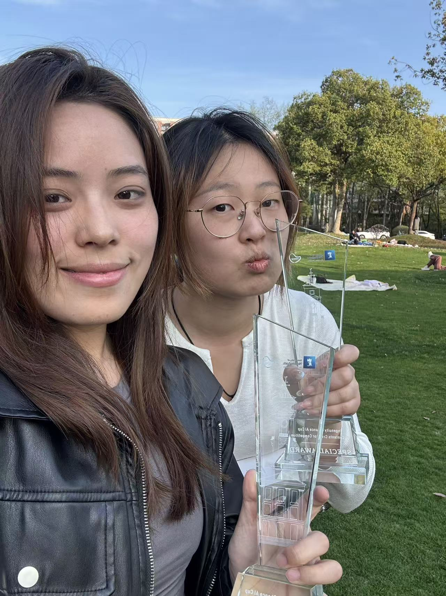
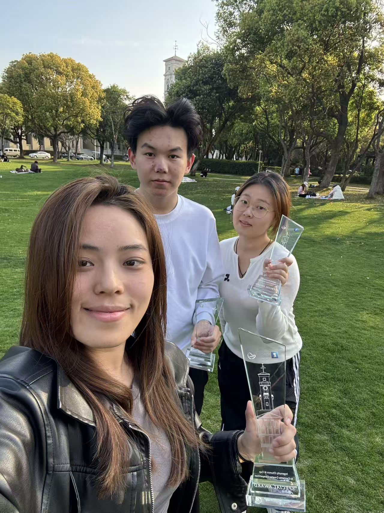
05
Global Badge
我热衷于参加国际科技盛会，因为那里有真实的人、真实的协作和真实的现场问题。志愿经历让我练习领导力、口译能力和国际视野。


.jpeg)

招募、培训并管理 100+ 国际志愿者，负责现场运营和 VIP 来宾沟通。
为华为展台提供双语技术讲解和商务口译，连接外国来宾与现场团队。
为国际嘉宾和爱沙尼亚相关代表提供接待与中英同传支持。
支持 VIP 一对一交流环节，也与 Angry Birds 创始人 Peter Vesterbacka 建立连接。
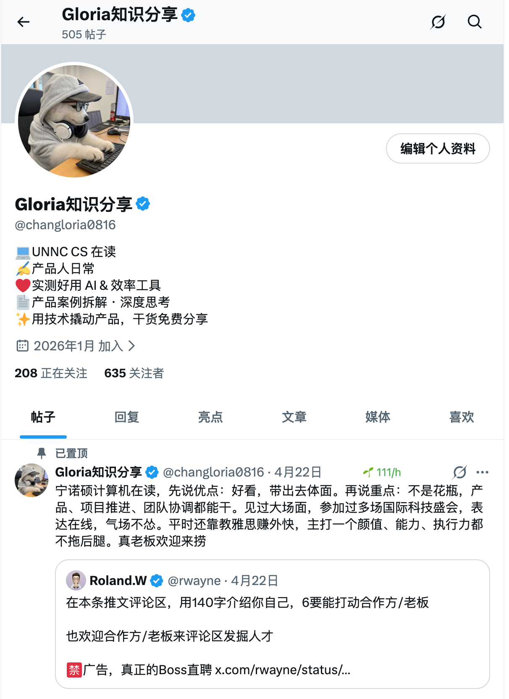
Energy, freedom, music, people, and AI.